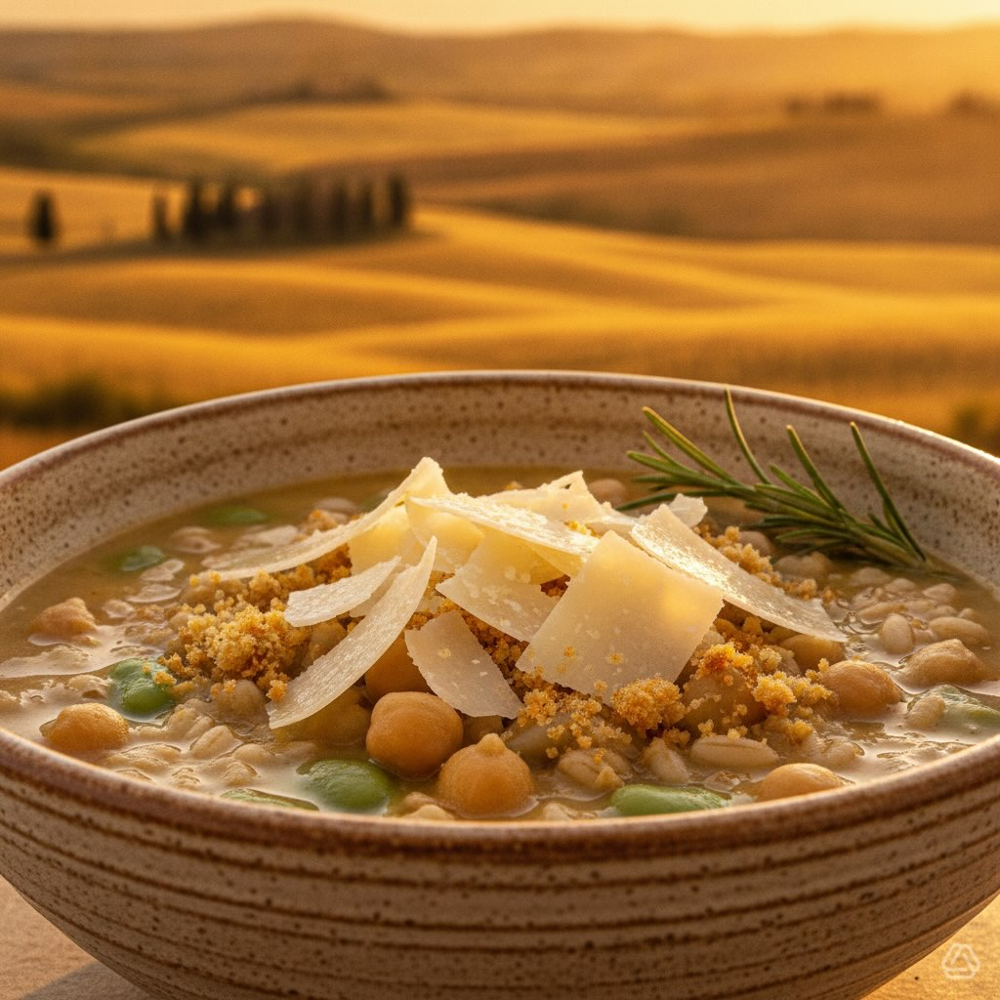

Zuppa di Farro e Ceci con Fave
Una zuppa nutriente e avvolgente che unisce il sapore rustico del farro con la cremosità dei ceci e la delicatezza delle fave fresche. Un piatto completo, perfetto per le sere estive più fresche.
Ingredienti
- Ingredienti principali:
- Farro perlato: 200g
- Ceci: 150g secchi o 400g precotti
- Fave: 200g fresche o 120g secche
- Cipolla rossa, aglio, sedano: tritati finemente
- Olio EVO, sale, pepe, rosmarino fresco
- Guarnizione:
- Pecorino Romano, pangrattato croccante, olio al rosmarino, fior di sale
- Crostini di farro (opzionali):
- Pane integrale, olio EVO, aglio
👨🍳 Preparazione
- Cottura legumi: ammollare e cuocere ceci e fave se secchi. Se usi legumi precotti, sciacquali e scolali.
- Cottura farro: bollire il farro perlato in abbondante acqua o brodo vegetale per circa 20 minuti, fino a che risulti al dente.
- Crema ceci-fave: frullare una parte dei legumi cotti con olio EVO, cipolla rosata e un rametto di rosmarino, fino a ottenere una crema vellutata.
- Assemblaggio zuppa: mescolare la crema ottenuta con il farro, i ceci interi, le fave e il sedano tritato. Cuocere a fuoco dolce per 10 minuti per amalgamare i sapori.
- Impiattamento: servire in ciotole calde, decorando con scaglie di pecorino romano, pangrattato croccante, una goccia di olio al rosmarino e un pizzico di fior di sale.
💡 Consigli dello Chef
- Texture perfetta: combina crema vellutata, farro al dente e ceci interi per un contrasto di consistenze piacevole.
- Ingredienti freschi: preferisci il farro perlato italiano e il pecorino stagionato per un sapore più intenso.
Spelt and Chickpea Soup with Fava Beans
A nourishing and comforting soup combining the rustic flavor of spelt with the creaminess of chickpeas and the delicacy of fresh fava beans. A complete dish, perfect for cooler summer evenings.
Ingredients
- Main ingredients:
- Pearled spelt: 200g
- Chickpeas: 150g dried or 400g pre-cooked
- Fava beans: 200g fresh or 120g dried
- Red onion, garlic, celery: finely chopped
- Extra virgin olive oil, salt, pepper, fresh rosemary
- Garnish:
- Pecorino Romano, crunchy breadcrumbs, rosemary oil, fleur de sel
- Spelt crostini (optional):
- Whole grain bread, extra virgin olive oil, garlic
👨🍳 Preparation
- Cook the legumes: soak and cook chickpeas and fava beans if using dried. If using pre-cooked, rinse and drain.
- Cook the spelt: boil pearled spelt in plenty of water or vegetable broth for about 20 minutes, until al dente.
- Chickpea-fava cream: blend some of the cooked legumes with extra virgin olive oil, sautéed onion and a sprig of rosemary until velvety smooth.
- Assemble the soup: mix the cream with spelt, whole chickpeas, fava beans and chopped celery. Cook over low heat for 10 minutes to blend flavors.
- Serve: serve in warm bowls, garnishing with Pecorino Romano shavings, crunchy breadcrumbs, a drop of rosemary oil and a pinch of fleur de sel.
Sopa de Espelta y Garbanzos con Habas
Una sopa nutritiva y reconfortante que une el sabor rústico de la espelta con la cremosidad de los garbanzos y la delicadeza de las habas frescas. Un plato completo, perfecto para las noches de verano más frescas.
Ingredientes
- Ingredientes principales:
- Espelta perlada: 200g
- Garbanzos: 150g secos o 400g precocidos
- Habas: 200g frescas o 120g secas
- Cebolla roja, ajo, apio: picados finamente
- Aceite de oliva virgen extra, sal, pimienta, romero fresco
- Guarnición:
- Pecorino Romano, pan rallado crujiente, aceite de romero, flor de sal
- Crostini de espelta (opcionales):
- Pan integral, aceite de oliva virgen extra, ajo
👨🍳 Preparación
- Cocción de legumbres: poner en remojo y cocer garbanzos y habas si son secos. Si usas precocidos, enjuagar y escurrir.
- Cocción de la espelta: hervir la espelta perlada en abundante agua o caldo vegetal durante unos 20 minutos, hasta que esté al dente.
- Crema de garbanzos y habas: triturar una parte de las legumbres cocidas con aceite de oliva, cebolla pochada y una ramita de romero, hasta obtener una crema aterciopelada.
- Montaje de la sopa: mezclar la crema obtenida con la espelta, los garbanzos enteros, las habas y el apio picado. Cocinar a fuego lento durante 10 minutos para amalgamar los sabores.
- Emplatado: servir en cuencos calientes, decorando con virutas de Pecorino Romano, pan rallado crujiente, una gota de aceite de romero y una pizca de flor de sal.
Sopa de Espelta e Grãos-de-Bico com Favas
Uma sopa nutritiva e reconfortante que une o sabor rústico da espelta com a cremosidade dos grãos-de-bico e a delicadeza das favas frescas. Um prato completo, perfeito para as noites de verão mais frescas.
Ingredientes
- Ingredientes principais:
- Espelta perlada: 200g
- Grãos-de-bico: 150g secos ou 400g precozidos
- Favas: 200g frescas ou 120g secas
- Cebola roxa, alho, aipo: picados finamente
- Azeite de oliva virgem extra, sal, pimenta, alecrim fresco
- Guarnição:
- Pecorino Romano, migalhas de pão crocantes, azeite de alecrim, flor de sal
- Crostini de espelta (opcionais):
- Pão integral, azeite de oliva virgem extra, alho
👨🍳 Preparação
- Cozedura dos legumes: deixar de molho e cozinhar grãos-de-bico e favas se forem secos. Se usar precozidos, enxaguar e escorrer.
- Cozedura da espelta: ferver a espelta perlada em abundante água ou caldo de legumes durante cerca de 20 minutos, até ficar al dente.
- Creme de grãos-de-bico e favas: triturar uma parte dos legumes cozidos com azeite de oliva, cebola estufada e um ramo de alecrim, até obter um creme aveludado.
- Montagem da sopa: misturar o creme obtido com a espelta, os grãos-de-bico inteiros, as favas e o aipo picado. Cozinhar em lume brando durante 10 minutos para amalgamar os sabores.
- Empratamento: servir em tigelas quentes, guarnecendo com lascas de Pecorino Romano, migalhas de pão crocantes, uma gota de azeite de alecrim e uma pitada de flor de sal.
Dinkel-Kichererbsen-Suppe mit Saubohnen
Eine nahrhafte und wohltuende Suppe, die den rustikalen Geschmack von Dinkel mit der Cremigkeit von Kichererbsen und der Delikatesse von frischen Saubohnen vereint. Ein vollständiges Gericht, perfekt für kühlere Sommerabende.
Zutaten
- Hauptzutaten:
- Perlgraupen-Dinkel: 200g
- Kichererbsen: 150g getrocknet oder 400g vorgekocht
- Saubohnen: 200g frisch oder 120g getrocknet
- Rote Zwiebel, Knoblauch, Sellerie: fein gehackt
- Natives Olivenöl extra, Salz, Pfeffer, frischer Rosmarin
- Garnierung:
- Pecorino Romano, knusprige Semmelbrösel, Rosmarinöl, Fleur de Sel
- Dinkel-Crostini (optional):
- Vollkornbrot, natives Olivenöl extra, Knoblauch
👨🍳 Zubereitung
- Hülsenfrüchte garen: Kichererbsen und Saubohnen einweichen und kochen, wenn getrocknet. Bei vorgekochten abspülen und abtropfen lassen.
- Dinkel garen: Perlgraupen-Dinkel in reichlich Wasser oder Gemüsebrühe etwa 20 Minuten kochen, bis er bissfest ist.
- Kichererbsen-Saubohnen-Creme: einen Teil der gekochten Hülsenfrüchte mit nativem Olivenöl, geschmorter Zwiebel und einem Rosmarinzweig pürieren, bis eine samtige Creme entsteht.
- Suppe zusammenstellen: die Creme mit Dinkel, ganzen Kichererbsen, Saubohnen und gehacktem Sellerie vermischen. Bei schwacher Hitze 10 Minuten kochen, um die Aromen zu verbinden.
- Anrichten: in warmen Schalen servieren, garniert mit Pecorino-Romano-Spähnen, knusprigen Semmelbröseln, einem Tropfen Rosmarinöl und einer Prise Fleur de Sel.
Σούπα Ντίνκελ με Ρεβίθια και Φασόλια
Μια θρεπτική και παρηγορητική σούπα που ενώνει τη ρουστίκ γεύση του ντίνκελ με την κρεμώδη υφή των ρεβιθιών και τη λεπτότητα των φρέσκων φασολιών. Ένα πλήρες πιάτο, τέλειο για τις πιο δροσερές καλοκαιρινές βραδιές.
Συστατικά
- Κύρια συστατικά:
- Ντίνκελ πέρλα: 200 γραμ.
- Ρεβίθια: 150 γραμ. ξηρά ή 400 γραμ. προψημένα
- Φασόλια: 200 γραμ. φρέσκα ή 120 γραμ. ξηρά
- Κόκκινο κρεμμύδι, σκόρδο, σέλερι: ψιλοκομμένα
- Έξτρα παρθένο ελαιόλαδο, αλάτι, πιπέρι, φρέσκο δεντρολίβανο
- Γαρνιτούρα:
- Πεκορίνο Ρομάνο, τραγανές φρυγανιές, λάδι δεντρολίβανου, ανθός αλατιού
- Κροστίνι ντίνκελ (προαιρετικά):
- Ολικής άλεσης ψωμί, έξτρα παρθένο ελαιόλαδο, σκόρδο
👨🍳 Εκτέλεση
- Μαγείρεμα οσπρίων: μουλιάστε και μαγειρέψτε ρεβίθια και φασόλια αν είναι ξηρά. Αν χρησιμοποιείτε προψημένα, ξεπλύνετε και σουρώστε.
- Μαγείρεμα ντίνκελ: βράστε το ντίνκελ πέρλα σε άφθονο νερό ή λαχανόζουμο για περίπου 20 λεπτά, μέχρι να γίνει al dente.
- Κρέμα ρεβιθιών-φασολιών: πολτοποιήστε μέρος των μαγειρεμένων οσπρίων με ελαιόλαδο, σοταρισμένο κρεμμύδι και ένα κλαδάκι δεντρολίβανου, μέχρι να γίνει βελούδινη κρέμα.
- Συναρμολόγηση σούπας: αναμείξτε την κρέμα με το ντίνκελ, τα ολόκληρα ρεβίθια, τα φασόλια και το ψιλοκομμένο σέλερι. Μαγειρέψτε σε χαμηλή φωτιά για 10 λεπτά για να ενωθούν οι γεύσεις.
- Σερβίρισμα: σερβίρετε σε ζεστά μπολ, γαρνίροντας με νιφάδες Πεκορίνο Ρομάνο, τραγανές φρυγανιές, μια σταγόνα λάδι δεντρολίβανου και μια πρέζα ανθό αλατιού.